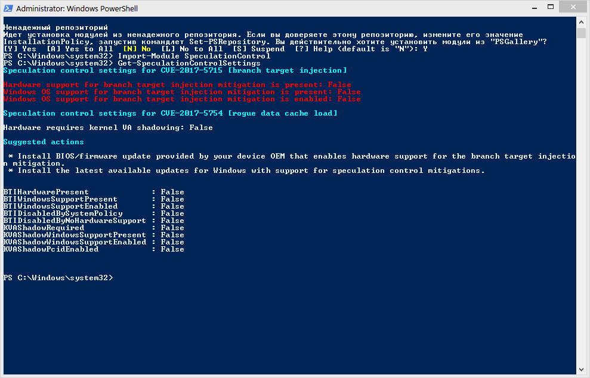

На сайте майкрософт размещена информация о том, как можно проверить подвержена ли ОС атакам meltdown. Там же имеется информация, как можно отключить последнее исправление.

Учитывая, что в интернете не утихают слухи о катастрофическом падении производительности и даже появляются сравнительные тесты «до» и «после» информация по отключению данной заплатки может оказаться полезной.
Сразу к делу: отключить можно внесением или корректировкой двух параметров в реестре.
С сайта майкрософт:
Включение или отключение фикса отдельно для CVE-2017-5715 и CVE-2017-5754 (Spectre и Meltdown)
Как включить фикс CVE-2017-5715 и CVE-2017-5754
reg add "HKEY_LOCAL_MACHINE\SYSTEM\CurrentControlSet\Control\Session Manager\Memory Management" /v FeatureSettingsOverride /t REG_DWORD /d 0 /f
reg add "HKEY_LOCAL_MACHINE\SYSTEM\CurrentControlSet\Control\Session Manager\Memory Management" /v FeatureSettingsOverrideMask /t REG_DWORD /d 3 /f
Как отключить фикс CVE-2017-5715 и CVE-2017-5754
reg add "HKEY_LOCAL_MACHINE\SYSTEM\CurrentControlSet\Control\Session Manager\Memory Management" /v FeatureSettingsOverride /t REG_DWORD /d 3 /f
reg add "HKEY_LOCAL_MACHINE\SYSTEM\CurrentControlSet\Control\Session Manager\Memory Management" /v FeatureSettingsOverrideMask /t REG_DWORD /d 3 /f
Включение или отключение фикса отдельно для CVE 2017-5715 (Spectre)
Как включить фикс CVE-2017-5715
reg add "HKEY_LOCAL_MACHINE\SYSTEM\CurrentControlSet\Control\Session Manager\Memory Management" /v FeatureSettingsOverride /t REG_DWORD /d 0 /f
reg add "HKEY_LOCAL_MACHINE\SYSTEM\CurrentControlSet\Control\Session Manager\Memory Management" /v FeatureSettingsOverrideMask /t REG_DWORD /d 1 /f
Как отключить фикс CVE-2017-5715
reg add "HKEY_LOCAL_MACHINE\SYSTEM\CurrentControlSet\Control\Session Manager\Memory Management" /v FeatureSettingsOverride /t REG_DWORD /d 1 /f
reg add "HKEY_LOCAL_MACHINE\SYSTEM\CurrentControlSet\Control\Session Manager\Memory Management" /v FeatureSettingsOverrideMask /t REG_DWORD /d 1 /f
Примечание * Установка значения 3 для FeatureSettingsOverrideMask является одинаковым для обоих случаев.
Примечание.* Отключение и включение посредством изменения параметров реестра потребует перезагрузки компьютера и права администратора.
Примечание.* Изменять MinVmVersionForCpuBasedMitigations нет необходимости.
Проверка наличия уязвимости в системе при помощи powershell модуля SpeculationControl
Предполагается, что ExecutionPolicy в powershell настроена на нужный уровень (Bypass или Unrestricted).
Установка модуля PowerShell:
Install-Module SpeculationControl
На оба вопроса отвечаем «Y».
Далее:
Import-Module SpeculationControl
Запуск проверки:
Get-SpeculationControlSettings
Результат в случае полной «защищенности» ПК:
BTIHardwarePresent : True
BTIWindowsSupportPresent : True
BTIWindowsSupportEnabled : True
BTIDisabledBySystemPolicy : True
BTIDisabledByNoHardwareSupport : True
KVAShadowRequired : True
KVAShadowWindowsSupportPresent : True
KVAShadowWindowsSupportEnabled : True
KVAShadowPcidEnabled : True
После применения изменения настроек и перезагрузки:
BTIHardwarePresent : False
BTIWindowsSupportPresent : False
BTIWindowsSupportEnabled : False
BTIDisabledBySystemPolicy : False
BTIDisabledByNoHardwareSupport : False
KVAShadowRequired : False
KVAShadowWindowsSupportPresent : False
KVAShadowWindowsSupportEnabled : False
KVAShadowPcidEnabled : False
А вот вопросы нужно это делать или нет, есть ли смысл или нет и остаются открытыми.
Источник Protect against speculative execution side-channel vulnerabilities in Windows client
Официальное обновление отключающее патч CVE 2017-5715 для всех поддерживаемых windows
www.catalog.update.microsoft.com/Search.aspx?q=KB4078130
P.P.S.: Если у кого-нибудь есть возможность протестировать есть ли вообще изменения в плане производительности, то было бы очень замечательно.